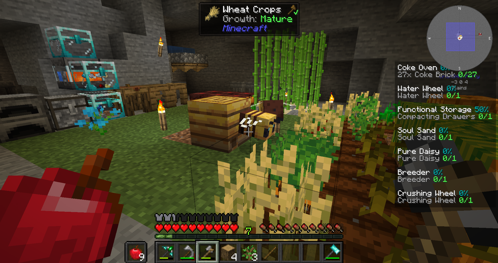
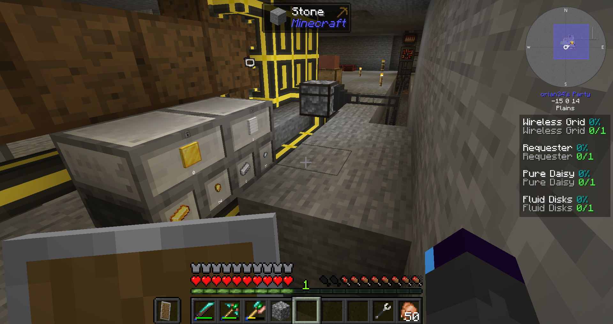
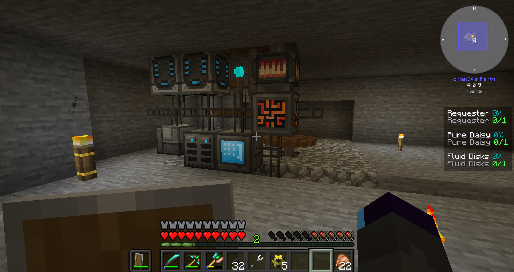

Modpack Author: FTB
Origin: Modpack Link
Versions: MC = 1.18.2 - Pack = 1.6.1
Presentation
StoneBlock 3 is more of a kitchen sink pack that has you underground for the whole time.
Unsure what else to expect, let’s just dive in!
Overview
Cave Out
After the skies, it only makes sense that I would be going deep into the earth. As always I pick the simplest start, one torch and an empty room surrounded by stone; welcome to Stratel. Progress comes quickly after making and using the hammer to pulverize stone until dirt. Then the crook provides me with all sorts of seeds and saplings; life has found its way.
My tools still being quite limited, I expand only lightly, and set up a manual mill and a very simple smelter to make a tinker’s iron pickaxe. With that handful of resources, I feel more comfortable progressing, but my production means are still non existent so my next focus is having some chickens.
I will need to really dabble in Create for crafting the resource chickens, that becomes my new priority along with a bigger smeltery. It begins with the fan… a gust of victory is blowing over my windmill. My one hemp seed allows a slow but steady production of string to continue increasing the power my mill can produce. Washing tremendously opens the amount of materials I can use, but I mostly use the copper to finish my smeltery and produce a handful of alloys to finely craft a set of powerful tools.

It takes me a while, but with this new power I can finally dig out using a tinker’s hammer, making expanding less straining. Meanwhile, my windmill grows stronger and I append extra utilities to benefit from it. Mixing the mob soul with sand, I can then use the soul sand with a fan to gain more of it, this also gives out the remaining resources needed for the mechanical crafter; a huge step done!
A Rooster of Problems
The chicken recipes available, I start setting up a rooster farm and breed some of the more valuable ones. Now it’s a matter of juggling the production aspect and starting to build the refined storage to handle all those resources.
It goes smoothly and with most of the resource chickens active, I can easily get enough wool for a new fully upgraded windmill dedicated to power my storage system. The processor “assembly line” set up provides enough to have the system fully operational and I can begin linking the chickens and other production means to it!

The semi automatic crafting era arrives, although the RF conversion on the windmill is poor and is barely enough for a handful of crafters and importers; I’ll need to look at the flux network and better generation means to expand more. But first is time for adventure!

I have netherite and feel confident in handling danger, exploration is on the menu tonight! A very long journey is on the horizon, as the distance and digging required make it harder to reach dungeons. I first get a mise en bouche of what’s to come; many mobs clustering in honeypots. I progress more and find a larger dungeon to raid, before proceeding further I go back using the very handy portable teleporter I got as reward.
Thermic Shock
I need to uncluster my power generation, and for that, getting a flux network is essential. Thankfully it is quite cheap and allows me to have a lattice setup to add more crafters without fearing a system shut down.
This expansion spike is a good opportunity to get wireless charging, then I go back and reach the Nether dungeon; also a spike but in difficulty. The handful of wither skeleton heads allow me to obtain my first nether star, immediately used for a philosopher’s stone; desperately needing a ring to obtain ice.
With blue ice, I can optimize the power generation from each thermopile and increase even more the permanent supply; things are getting comfortable. Being in possession of the stone, transmutation isn’t that far away anymore, so investing in powah might be the best move now.
Having a steady but not that high supply of power, I decide to handle it by having a buffer of 128 million, so doing crafts won’t be an energy lockdown. Once that’s done, I can focus on upgrading the setup to reach the first EMC condenser and spend my accumulated emerald blocks.
Unlimited EMC Works
After making it, I optimize slightly my lattice and add 6 extra power storages through EMC. This completely changes the paradigm, now that I can easily duplicate most resources the crafting strain is much lighter. I can remove a good amount of my existing productions while focusing on emerald blocks instead.
Since I’m at that point, why not simply start looking into neutronium? And it’s fairly cheap, thankfully, so I can prepare a whole matrix superboosted with watches; the endgame won’t be so slow this time. The neutronium production is so efficient, I decide to go a step further and make the compressor too, the final crafting process!

Now that I reached the endgame stage so early, my goals will be to tackle automation of the singularities needed; some maths leave me with 1536 each. My first one is the experience jelly one, which is the perfect opportunity to have a working mob slaughter farm, as well as having access to custom spawning.
While it is running in the background, I can focus on another singularity; randomly choosing, I go for pig iron. I prepare everything for it, install an infinite supply of lava, use the condenser MK2 for zombie heads linked to the reconverted smeltery for mass blood production. I then create a line of max speed induction smelters, powered by my lattice that got superboosted by another watch, tenfolding my energy supply.
Singular Focus
It’s running smoothly, so I look into a third singularity to make; balloons. This one is a whole lot more complicated to do, I have to make a field of botany pots for hemp, as well as pyrolizers and spouts for the treated wood.
The pig iron singularities got finished meanwhile, so I look into a new one, uraninite, and increase my powah setup, leading to the nitro crystal one. Needing 20 million for each craft, I’ll definitely need to have increased energy, so I expand a bit more my lattice and bulk up my storage.
Things progress on their own, but it wouldn’t hurt to have a bigger advantage, so I make a circuit to easily have watches and boost everything I need. I also clear up the rest in powah and make a super energy unit that can store up to 12B FE, as well as the powah equivalent to my thermopiles, slinging my power supply to almost 1M FE/t!
I think this is likely going to be my final setup, so I’m able to dabble more into other singularities while the automation progresses on its own. There’s still big slumps like the polonium singularity from mekanism that requires a heavy investment(I dislike mekanism), but otherwise it’s quite smooth sailing.
It’s Bloody Magic!
I figure out I can use a personal EMC link to make it even simpler, and got most things looping on their own. Only a handful remain, including all three magic mods; it’s time to have some simpler fun. Botania is always the same, a handful of endoflames and I can leave it running until the end(what a wasted potential that mod is). Blood magic on the other hand, I never really went past the sacrificial dagger, but I can’t afford to do it manually here.

After some learning effort, I figure out the best way to tackle it; repurpose my now useless mob farm with a ritual that drains the mobs. I can then place watch pedestals for each blood altar(boosted with runes too) and see the slates fly by! At least the first tier… I need to explore more so I can obtain the ore to upgrade to maximum altar level for efficiency.
While waiting to complete it, I look into the ars nouveau one and it’s so easy I barely have anything to setup. Not long after that I finalize the altars for a decent speed to craft all the slates without my input. Next… what’s next? All the singularities are done or on the way, I have to get a deeper understanding of create to have the mechanical crafter running at max speed.
Once it’s all handled, the big recipes can be done on their own while I look into all the foods I can’t EMC, thankfully a lot more simple and fun compared to singularities. The next step is… well there’s almost nothing else left is it? The boss is waiting for me far away!
I prepared by making a bane 5 sword and the fight was quite easy after all. It took me some time to figure out how to make the drygmy farm, then all the remaining hearts were obtained effortlessly! The final items accessible after all this work, I have some fun clearing out the quest tabs while waiting for the autocraft of the infinity catalysts and ingots.
Conclusion
If I’m really being honest, I was disappointed. The progress was way too open and quick, reaching chickens and EMC really easily making everything else a side note. I didn’t realize this was a kitchen sink pack.
Most of the time spent in the pack is for making the singularities. Not enough gated progression before that point to allow some resource backlog that would make the grind less time consuming. I really wish this parody mod wasn’t the standard endgame of almost every modpack. You could chop it down to a 1/4 and not lose much aside time spent setting up grinding; the “secret” train quest was more fun than most singularities as an endgame challenge. I also quite miss the times were rewards were relevant to the quests, random rewards/lootboxes really made progress awkward these days.
I may sound like a downer, and that’s because I am, the modpack is mostly carried by existing systems and mods, so I didn’t really find much special in it (the boss was pretty unique and fun). It’s not bad, it’s simply very standard kitchen sink, and that’s not what I have fun with. Regardless, you might enjoy it more than me so give it a try!